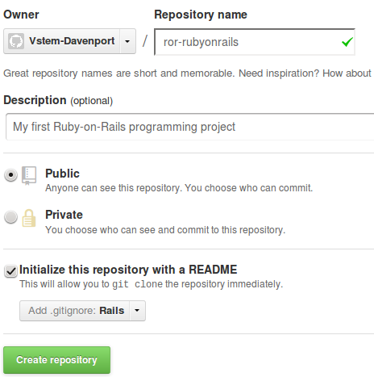
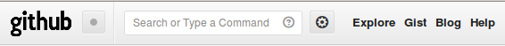
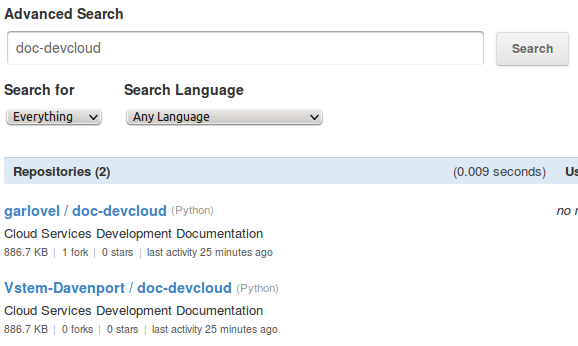
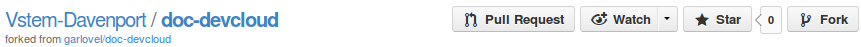

Note
Replace __username__ with your username in following commands.
Visit the GitHub website
Click your name to go to your own page on GitHub
To the right of your name, click the + to start a new repository
Fill out Repository name, Description, and .gitignore entries
Click button Create repository to generate the repository
GitHub will make a fresh repository and open it for you.
There is no need to start from scratch when creating a project. Instead, fork someone else’s open source work. Login to GitHub, then:

Click Explore from the GitHub page top menubar
Click Search on the Explore GitHub menubar
Type in a search string, then click button search
Click a repository name to display that repository
Click the Fork button on the repository bar to fork a copy
GitHub will make a copy of the repository and open it for you.